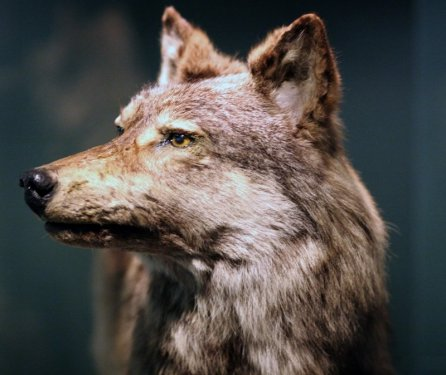
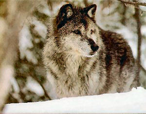
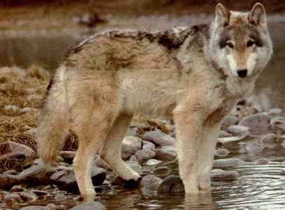

The Newfoundland wolf lived on the island of Newfoundland off the east coast of Canada. Recent evidence has suggested that the first wolves to inhabit the island may have been there prior to the last ice age, surviving the ice age in refugia, south of the glacial ice sheet.
Although hunting, trapping, and vigorous predator control methods were used on the Newfoundland wolf, it is believed to have been led to extinction mainly by a sudden food shortage in the early 1900's when the Newfoundland caribou population drastically dropped from as many as 120,000 to as few as 5,000-6,000. The last wild wolf on the island was shot by 1911.
The Newfoundland Wolf was a medium-sized subspecies of grey wolf. The Newfoundland Wolf had a more slender skull than others. It was around five feet in length The Newfoundland Wolf had a lighter pelt than other subspecies of grey wolves. This subspecies is not known to have black specimens like other grey wolf populations. It had shorter ears and thicker, bushier fur than its southern relatives, likely adaptations to the cold climate of Newfoundland.
The Newfoundland Wolf lived in packs consisting of one dominant breeding pair, their new litters, older offspring that haven't left to find their own packs or join other packs, and siblings of the dominant pair. The Newfoundland Wolf and its related species fed on bison, elk, moose, deer, and other large herbivores. Newfoundland Wolves would feed on snow hares and smaller prey when larger ones were not available.
Newfoundland Wolves were known to approach humans to feed on the carcasses brought back to butcher. They rarely attacked humans, unless humans were seeking their pups to kill for pelts. They were hunted for their furs by Native Americans. The arrival of European hunters drove them to extinction.